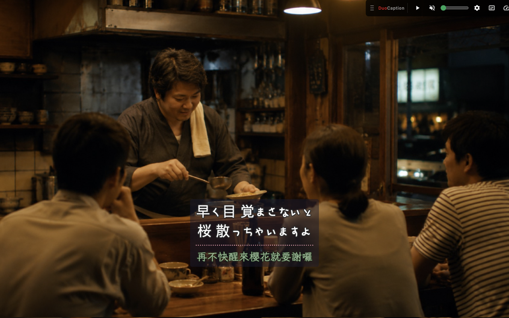
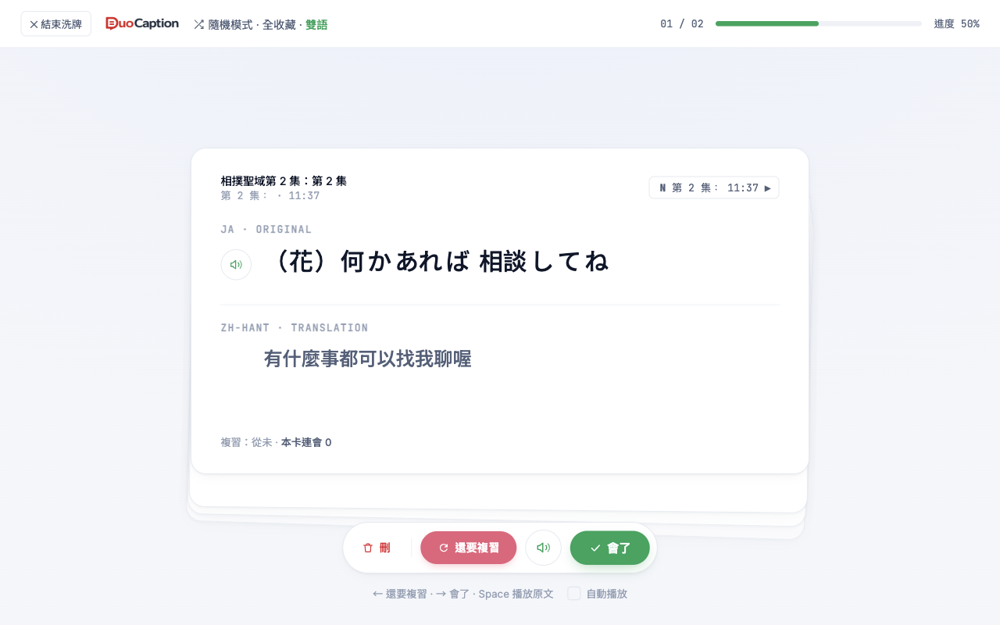
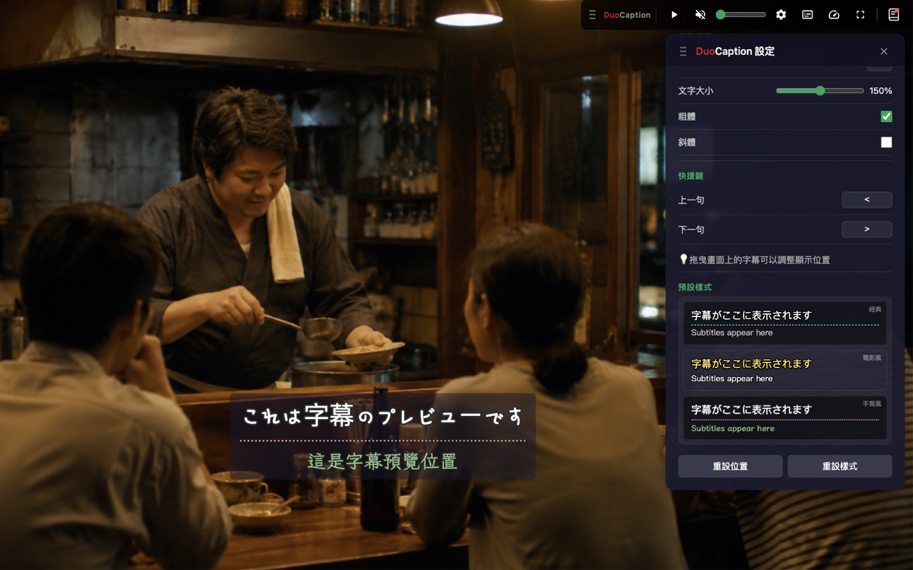
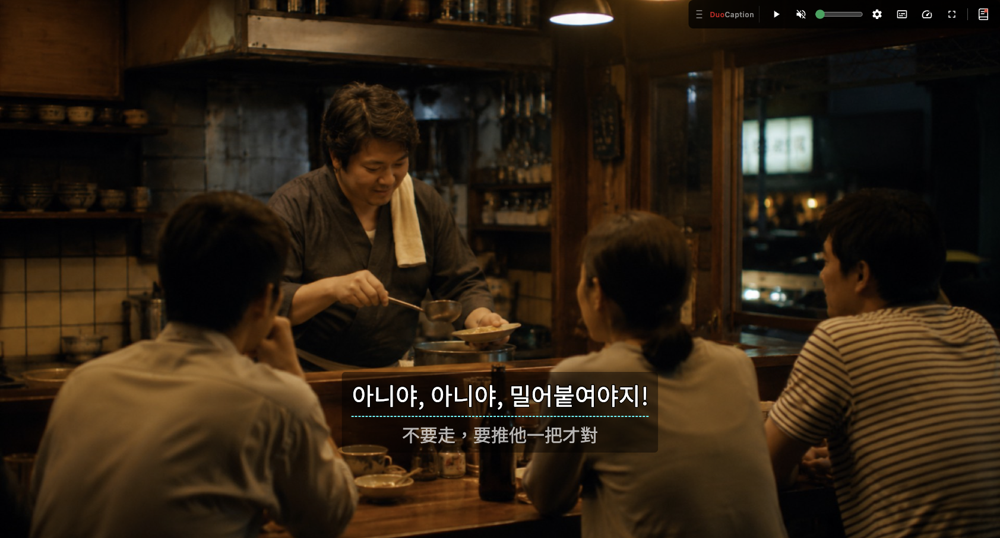

← 返回作品集
官方網站
DuoCaption Netflix 雙語字幕




DuoCaption 是一款在 Netflix 上顯示雙語字幕的 Chrome 擴充功能（Manifest V3）。透過攔截 Netflix 字幕軌道，將兩種語言並列顯示；滑鼠移到單字即暫停影片並顯示翻譯與發音，可收藏詞彙與句子、單句循環重複播放，並透過獨立的複習頁面以間隔複習法（SRS）鞏固記憶。介面支援 8 種語言。
功能特色
- 雙語字幕並列顯示（攔截 Netflix TTML 字幕軌道）
- Hover 單字暫停影片，即時翻譯與發音
- 收藏詞彙／句子，單句循環重複播放
- 間隔複習（SRS）複習頁面與學習統計
- 可拖曳工具列與所見即所得設定面板
- 8 種語言介面（i18n）